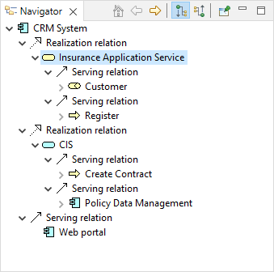
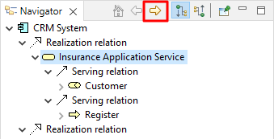
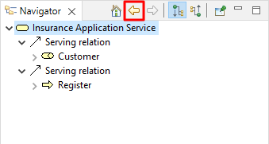
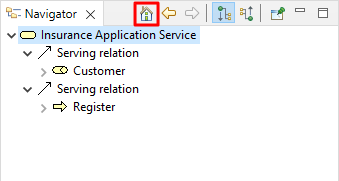
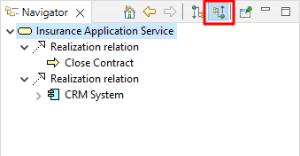
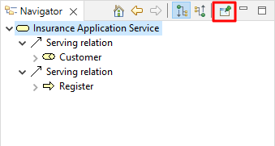

导航窗口显示当前选定的模型概念及其与其他概念的所有关系。它用于显示和允许通过它们的关系在连接的概念之间导航，并与模型树窗口和视图结合使用。
模型树充当模型中所有元素、关系和视图的“平面”存储库。视图是这些概念的图形配置。但是，导航器能够在模型级别显示所有概念的关系，无论它们在视图中如何呈现。
要使用导航器窗口，请在模型树或视图中选择任何元素或关系。导航器树将更新以反映当前选择。树显示了“根”选定的概念和源自它的任何关系以及来自这些关系的任何“目标”概念：
导航窗口
在上面的屏幕截图中，用户选择了“CRM系统”元素。所选元素与“客户管理服务”、“保险申请服务”、“CIS”这三个元素之间存在三种实现关系。从这三个元素中可以看出它们与其目标概念之间的进一步关系。
因此，可以“向下钻取”导航器树，并在其后从一个概念遍历到另一个概念，以及从源到目标的子关系。
通过双击树中的子概念或单击窗口工具栏上的“进入”按钮，选定的子概念可以成为“根”概念：
“进入”按钮
相反，按下“返回”按钮会带您回到之前选择的概念：
“返回”按钮
“主页”按钮带您回到最初选择的主根概念：
“主页”按钮
默认情况下，导航器显示从源概念流向目标概念的关系。通过单击窗口工具栏上的“显示源关系”按钮，可以将其反转以显示从目标流向源的概念关系：
显示源关系模式
在上面的屏幕截图中，元素“CRM系统”是两个“使用者”关系的目标。所以流程是从“大型机”到“索赔文件服务”再到“CRM系统”，从“NAS文件服务器”到“客户文件服务”再到“CRM系统”。
如果需要，可以通过在导航器窗口中选择固定按钮来固定选定的概念：
“pin”按钮
还可以将任何选定的元素和/或关系从导航树拖放到视图，其方式与从模型树拖放到视图完全相同（参见 将模型树中的元素和关系添加到视图)